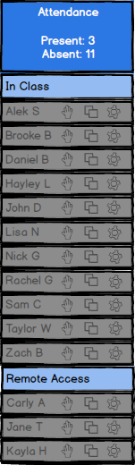
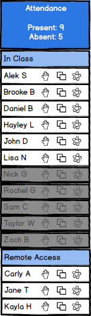
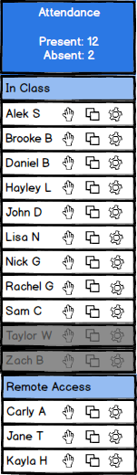

The roster is populated with the names of the viewers as people log in. The names of students that are not logged in yet have their name appear as grayed out and the names of the students who are logged in appear clearly with a white background.
Figure 1 shows the 'Roster' with the names grayed-out since nobody is signed in yet.

Figure 1: Roster Before Anyone Is Signed In
The names of viewers in the class as well as viewers accessing the lecture remotely will have their names populated into the roster.
Figure 2 shows the 'Roster' with more viewers' names clearly displayed.

Figure 2: Additional Names Added to Roster
The attendance can be taken using the box on top of the roster labeled 'Attendance'.
Figure 3 shows the 'Roster' where students' names are listed.

Figure 3: Attendance in Roster
The roster is separated into sections for students that are in class and students that are
connected remotely. In the figure above the two students with grayed out names are absent
and the other students are all present. The box at the top of the roster keeps track of how many
students are present and how many are absent. The number of students present and the number
of students absent will be updated as student are logged in.